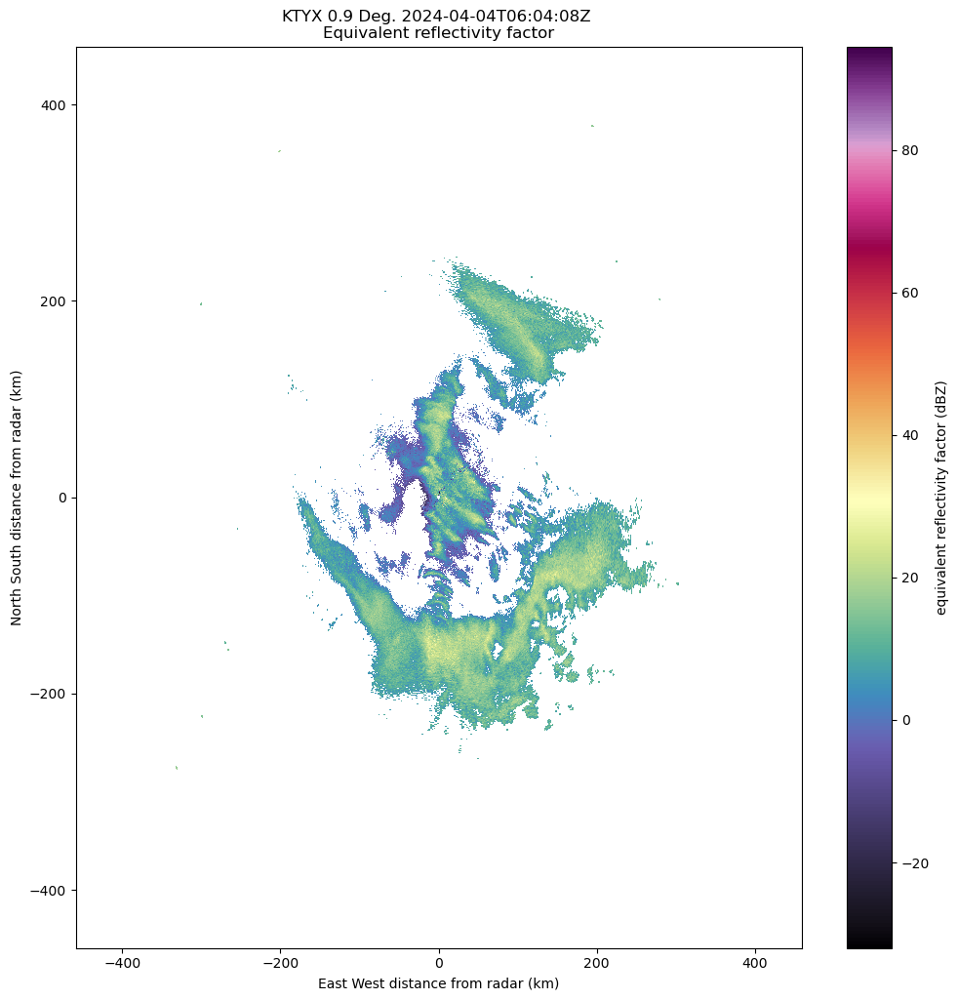
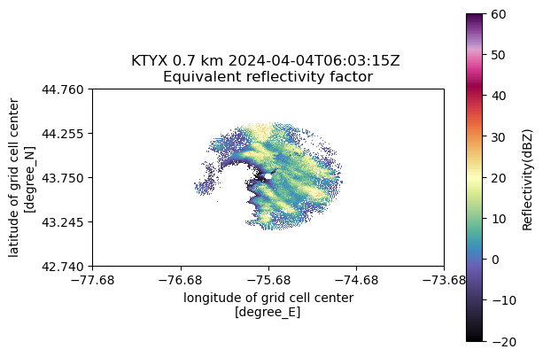
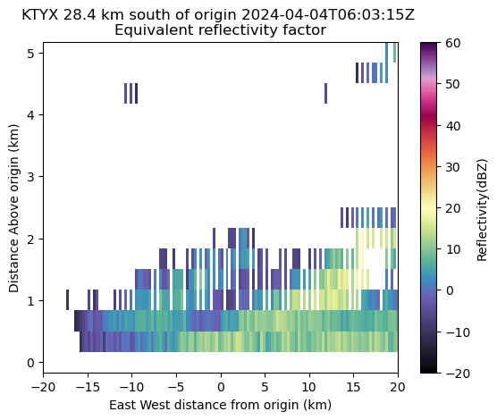
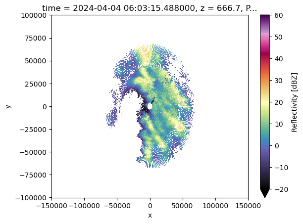
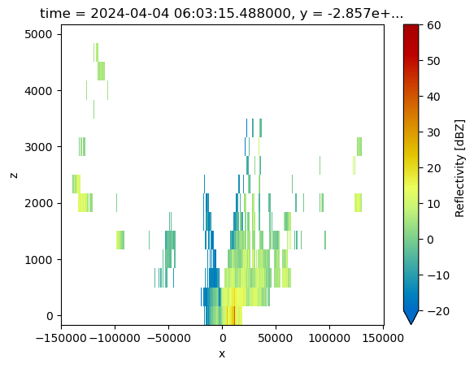

Py-ART Gridding
Overview
Within this notebook, we will cover:
What is gridding and why is it important?
An overview of gridding with Py-ART
Test out a different gridding routine
Apply Gridding to a Selection of Files
Prerequisites
Concepts |
Importance |
Notes |
|---|---|---|
Helpful |
Basic features |
|
Helpful |
Basic features |
|
Helpful |
Basic plotting |
|
Helpful |
Basic arrays |
Time to learn: 15 minutes
Imports
import os
from pathlib import Path
import glob
import warnings
import cartopy.crs as ccrs
import matplotlib.pyplot as plt
import pyart
from pyart.testing import get_test_data
import xarray as xr
warnings.filterwarnings('ignore')
## You are using the Python ARM Radar Toolkit (Py-ART), an open source
## library for working with weather radar data. Py-ART is partly
## supported by the U.S. Department of Energy as part of the Atmospheric
## Radiation Measurement (ARM) Climate Research Facility, an Office of
## Science user facility.
##
## If you use this software to prepare a publication, please cite:
##
## JJ Helmus and SM Collis, JORS 2016, doi: 10.5334/jors.119
What is gridding and why is it important?
Antenna vs. Cartesian Coordinates
Radar data, by default, is stored in a polar (or antenna) coordinate system, with the data coordinates stored as an angle (ranging from 0 to 360 degrees with 0 == North), and a radius from the radar, and an elevation which is the angle between the ground and the ground.
This format can be challenging to plot, since it is scan/radar specific. Also, it can make comparing with model data, which is on a lat/lon grid, challenging since one would need to transform the model data cartesian coordinates to polar/antenna coordiantes.
Fortunately, PyART has a variety of gridding routines, which can be used to grid your data to a Cartesian grid. Once it is in this new grid, one can easily slice/dice the dataset, and compare to other data sources.
Why is Gridding Important?
Gridding is essential to combining multiple data sources (ex. multiple radars), and comparing to other data sources (ex. model data). There are also decisions that are made during the gridding process that have a large impact on the regridded data - for example:
What resolution should my grid be?
Which interpolation routine should I use?
How smooth should my interpolated data be?
While there is not always a right or wrong answer, it is important to understand the options available, and document which routine you used with your data! Also - experiment with different options and choose the best for your use case!
An overview of gridding with Py-ART
Let’s dig into the regridding process with PyART!
Read in and Visualize a Test Dataset
Let’s start with the same file used in the previous notebook (PyART Corrections), which is a radar file from Northern Oklahoma.
file = "data/KTYX20240404_060315_V06"
radar = pyart.io.read(file)
Let’s plot up quick look of reflectivity, at the lowest elevation scan (closest to the ground)
fig = plt.figure(figsize=[12, 12])
display = pyart.graph.RadarDisplay(radar)
display.plot_ppi('reflectivity',
sweep=2,
cmap='pyart_ChaseSpectral')

As mentioned before, the dataset is currently in the antenna coordinate system measured as distance from the radar
Setup our Gridding Routine with pyart.map.grid_from_radars()
Py-ART has the Grid object which has characteristics similar to that of the Radar object, except that the data are stored in Cartesian coordinates instead of the radar’s antenna coordinates.
pyart.core.Grid?
We can transform our data into this grid object, from the radars, using pyart.map.grid_from_radars().
Beforing gridding our data, we need to make a decision about the desired grid resolution and extent. For example, one might imagine a grid configuration of:
Grid extent/limits
20 km in the x-direction (north/south)
20 km in the y-direction (west/east)
15 km in the z-direction (vertical)
500 m spatial resolution
The pyart.map.grid_from_radars() function takes the grid shape and grid limits as input, with the order (z, y, x).
Let’s setup our configuration, setting our grid extent first, with the distance measured in meters
z_grid_limits = (0., 5000.)
y_grid_limits = (-100_000.,100_000.)
x_grid_limits = (-150_000.,150_000.)
Now that we have our grid limits, we can set our desired resolution (again, in meters)
grid_resolution = 300
Let’s compute our grid shape - using the extent and resolution to compute the number of grid points in each direction.
def compute_number_of_points(extent, resolution):
return int((extent[1] - extent[0])/resolution)
Now that we have a helper function to compute this, let’s apply it to our vertical dimension
z_grid_points = compute_number_of_points(z_grid_limits, grid_resolution)
z_grid_points
16
We can apply this to the horizontal (x, y) dimensions as well.
x_grid_points = compute_number_of_points(x_grid_limits, grid_resolution)
y_grid_points = compute_number_of_points(y_grid_limits, grid_resolution)
print(z_grid_points,
y_grid_points,
x_grid_points)
16 666 1000
Use our configuration to grid the data!
Now that we have the grid shape and grid limits, let’s grid up our radar!
grid = pyart.map.grid_from_radars(radar,
grid_shape=(z_grid_points,
y_grid_points,
x_grid_points),
grid_limits=(z_grid_limits,
y_grid_limits,
x_grid_limits),
fields=['reflectivity'],
gridding_algo='map_gates_to_grid',
h_factor=0.,
nb=0.6,
bsp=1.,
min_radius=200.
)
grid
<pyart.core.grid.Grid at 0x7f2d249b2ff0>
We now have a pyart.core.Grid object!
Plot up the Grid Object
Plot a horizontal view of the data
We can use the GridMapDisplay from pyart.graph to visualize our regridded data, starting with a horizontal view (slice along a single vertical level)
display = pyart.graph.GridMapDisplay(grid)
display.plot_grid('reflectivity',
level=2,
vmin=-20,
vmax=60,
cmap='pyart_ChaseSpectral')

Plot a Latitudinal Slice
We can also slice through a single latitude or longitude!
display.plot_latitude_slice('reflectivity',
lat=43.5,
vmin=-20,
vmax=60,
cmap='pyart_ChaseSpectral')
plt.xlim([-20, 20]);

Plot with Xarray
Another neat feature of the Grid object is that we can transform it to an xarray.Dataset!
ds = grid.to_xarray()
ds
<xarray.Dataset> Size: 96MB
Dimensions: (time: 1, z: 16, y: 666, x: 1000, nradar: 1)
Coordinates: (12/16)
* time (time) object 8B 2024-04-04 06:03:15.488000
* z (z) float64 128B 0.0 333.3 ... 4.667e+03 5e+03
lat (y, x) float64 5MB 42.84 42.84 ... 44.64 44.64
lon (y, x) float64 5MB -77.52 -77.52 ... -73.78
* y (y) float64 5kB -1e+05 -9.97e+04 ... 1e+05
* x (x) float64 8kB -1.5e+05 -1.497e+05 ... 1.5e+05
... ...
origin_altitude (time) float64 8B 597.0
radar_altitude (nradar) float64 8B 597.0
radar_latitude (nradar) float64 8B 43.76
radar_longitude (nradar) float64 8B -75.68
radar_time (nradar) float64 8B 0.488
radar_name (nradar) <U4 16B 'KTYX'
Dimensions without coordinates: nradar
Data variables:
reflectivity (time, z, y, x) float32 43MB nan nan ... nan nan
ROI (time, z, y, x) float32 43MB 200.0 ... 200.0
Attributes: (12/13)
radar_name: KTYX
nradar: 1
Conventions: CF/Radial instrument_parameters
version: 1.3
title:
institution:
... ...
source:
history:
comment:
instrument_name: KTYX
original_container: NEXRAD Level II
vcp_pattern: 215Now, our plotting routine is a one-liner, starting with the horizontal slice:
ds.isel(z=2).reflectivity.plot(cmap='pyart_ChaseSpectral',
vmin=-20,
vmax=60);

And a vertical slice at a given y dimension (latitude)
ds.sel(y=-3000,
method='nearest').reflectivity.plot(cmap='pyart_HomeyerRainbow',
vmin=-20,
vmax=60);

Summary
Within this notebook, we covered the basics of gridding radar data using pyart, including:
What we mean by gridding and why is it matters
Configuring your gridding routine
Visualize gridded radar data
What’s Next
In the next few notebooks, we walk through applying data cleaning methods, and advanced visualization methods!
Resources and References
Py-ART essentials links: